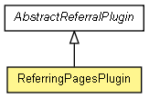

org.apache.wiki.plugin
Class ReferringPagesPlugin
java.lang.Object
 org.apache.wiki.plugin.AbstractReferralPlugin
org.apache.wiki.plugin.ReferringPagesPlugin
org.apache.wiki.plugin.AbstractReferralPlugin
org.apache.wiki.plugin.ReferringPagesPlugin
- All Implemented Interfaces:
- WikiPlugin
public class ReferringPagesPlugin
- extends AbstractReferralPlugin

Displays the pages referring to the current page.
Parameters:
- max - How many items to show.
- extras - How to announce extras.
- page - Which page to get the table of contents from.
From AbstractReferralPlugin:
- separator - How to separate generated links; default is a wikitext line break,
producing a vertical list.
- maxwidth - maximum width, in chars, of generated links.
|
Field Summary |
static String |
PARAM_EXTRAS
Parameter name for setting the text to show when the maximum items is overruled. |
static String |
PARAM_MAX
Parameter name for setting the maximum items to show. |
static String |
PARAM_PAGE
Parameter name for choosing the page. |
| Fields inherited from class org.apache.wiki.plugin.AbstractReferralPlugin |
ALL_ITEMS, m_after, m_before, m_dateFormat, m_dateLastModified, m_engine, m_exclude, m_include, m_lastModified, m_maxwidth, m_separator, m_show, m_sorter, PARAM_AFTER, PARAM_BEFORE, PARAM_EXCLUDE, PARAM_INCLUDE, PARAM_LASTMODIFIED, PARAM_MAXWIDTH, PARAM_SEPARATOR, PARAM_SHOW, PARAM_SHOW_VALUE_COUNT, PARAM_SHOW_VALUE_PAGES, PARAM_SORTORDER, PARAM_SORTORDER_HUMAN, PARAM_SORTORDER_JAVA, PARAM_SORTORDER_LOCALE |
| Methods inherited from class java.lang.Object |
clone, equals, finalize, getClass, hashCode, notify, notifyAll, toString, wait, wait, wait |
PARAM_MAX
public static final String PARAM_MAX
- Parameter name for setting the maximum items to show. Value is "max".
- See Also:
- Constant Field Values
PARAM_EXTRAS
public static final String PARAM_EXTRAS
- Parameter name for setting the text to show when the maximum items is overruled.
Value is "extras".
- See Also:
- Constant Field Values
PARAM_PAGE
public static final String PARAM_PAGE
- Parameter name for choosing the page. Value is "page".
- See Also:
- Constant Field Values
ReferringPagesPlugin
public ReferringPagesPlugin()
execute
public String execute(WikiContext context,
Map<String,String> params)
throws PluginException
- This is the main entry point for any plugin. The parameters are parsed,
and a special parameter called "_body" signifies the name of the plugin
body, i.e. the part of the plugin that is not a parameter of
the form "key=value". This has been separated using an empty
line.
Note that it is preferred that the plugin returns
XHTML-compliant HTML (i.e. close all tags, use <br />
instead of <br>, etc.
- Parameters:
context - The current WikiContext.params - A Map which contains key-value pairs. Any
parameter that the user has specified on the
wiki page will contain String-String
parameters, but it is possible that at some future date,
JSPWiki will give you other things that are not Strings.
- Returns:
- HTML, ready to be included into the rendered page.
- Throws:
PluginException - In case anything goes wrong.
Copyright © {inceptionYear}-2014 The Apache Software Foundation. All rights reserved.